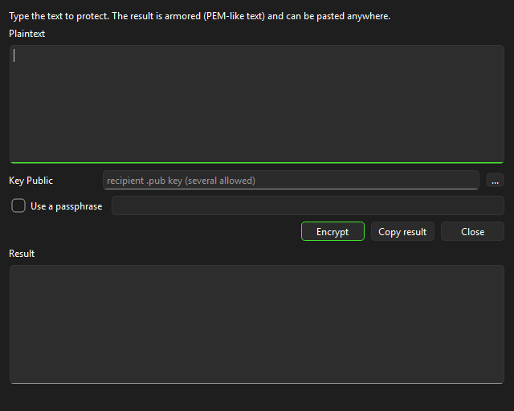
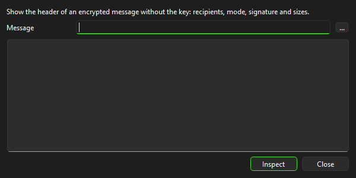
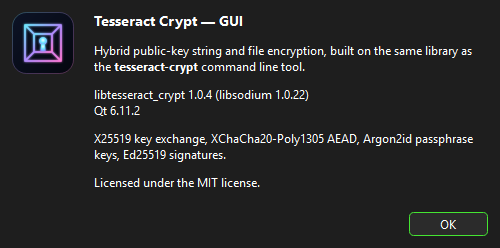

Tangkapan Layar





Fitur
- Enkripsi/dekripsi berkas (kunci publik atau kata sandi), multi-penerima (v2)
- Kontainer PE-split untuk berkas besar (terdeteksi otomatis saat dekripsi)
- Batch enkripsi/dekripsi dari direktori (bisa menyertakan subdirektori)
- Enkripsi/dekripsi teks langsung dari GUI
- Pembuatan kunci, ekspor kunci publik, dan info kunci
- Tanda tangan lepas (tanda tangan dan verifikasi)
- Inspeksi pesan terenkripsi
- Drag & drop
- Pemrosesan latar belakang agar UI tetap responsif
- Penulisan berkas atomik
- 100% kompatibel dengan CLI
tesseract-crypt - Windows GUI subsystem secara default (tanpa jendela konsol tambahan)